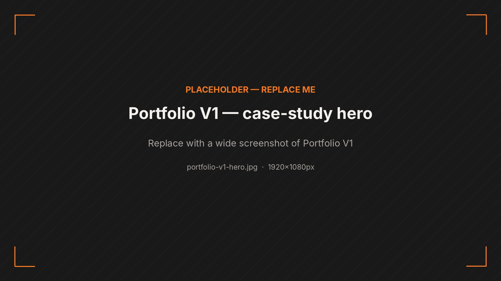
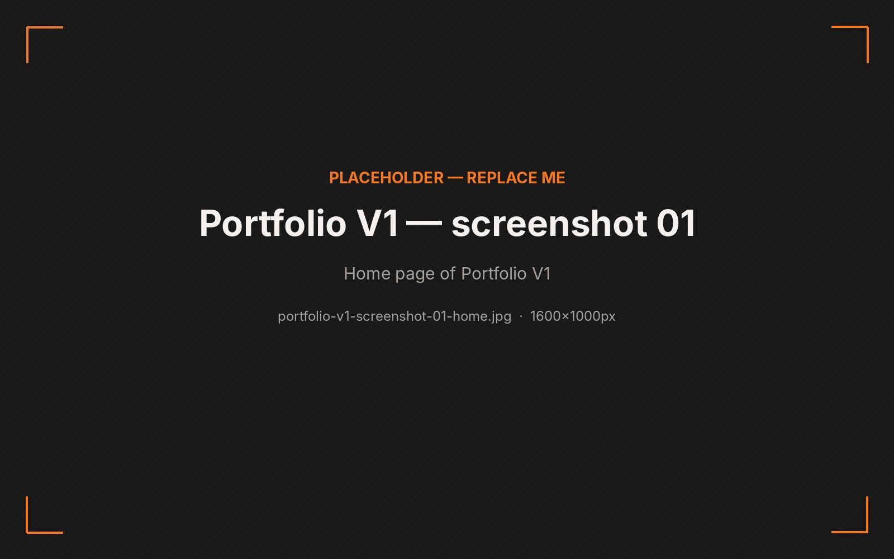
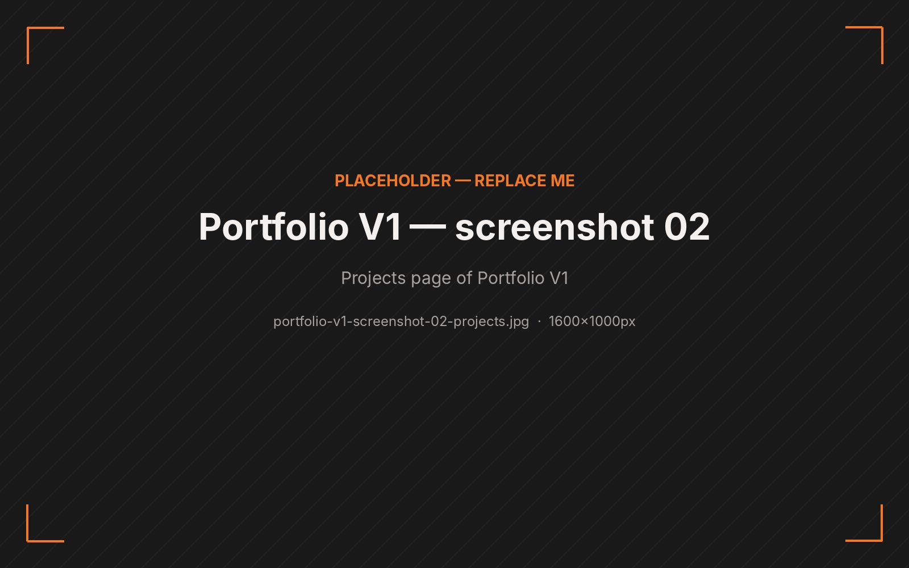

Contact without a backend
A static site has no server to send email. V1 was honest about that and left the form unconnected; V2 answers it with EmailJS.
Case study 02Personal Portfolio · Front-end
The original personal portfolio that preceded V2 — a compact, multi-page static site that established the charcoal-and-orange identity this redesign builds on.

01Overview
Portfolio V1 introduced me as a developer learning front-end web development, PHP and Laravel basics. It had four pages — Home, Projects, About and Contact — with a fixed navigation bar, a project gallery and a contact page.
V2 is the next step in that story: it keeps what made V1 recognisable and rebuilds how it is structured, presented and implemented.
02Problem
V1 did its job as a first portfolio, but it had limits. The contact form was interface-only and did not send messages. Styling depended on the Tailwind CDN at runtime. There was no light theme, and projects were summarised on a single gallery page with no individual case studies.
03Solution
V2 is a redesign rather than a patch. The visual identity — dark charcoal, orange, the ring motif — is preserved, while structure, typography, theming and the contact flow were rebuilt. The comparison below shows what changed.
| Aspect | V1 | V2 |
|---|---|---|
| Structure | Four separate pages | Single-page home plus three case-study pages |
| Styling | Tailwind CSS via CDN and a small custom stylesheet | Modular custom CSS with semantic design tokens; no build step |
| Typography | Montserrat and Inter | Space Grotesk, Inter and JetBrains Mono |
| Theme | Dark only | Dark by default, light alternative, saved in localStorage |
| Contact form | Interface only — not connected | EmailJS integration with validation and a honeypot, ready for credentials |
| Projects | One gallery page | Case studies that separate implemented from unclaimed features |
| Identity | Charcoal and orange, circular ring graphic | Same palette and ring motif, refined |
04Main features
Home, Projects, About and Contact pages sharing one navigation bar.
Fixed header with a mobile menu toggle.
A gallery of the booking project and three practice exercises.
A floating button that appears after scrolling.
The form was interface-only and said so on screen; it did not send messages.
05Technology stack
06Screenshot gallery


07Development challenges
A static site has no server to send email. V1 was honest about that and left the form unconnected; V2 answers it with EmailJS.
Loading Tailwind from a CDN at runtime ties the site's appearance to an external script. V2 moves styling into local, modular CSS.
A single gallery page can list projects but not explain them. V2 adds case studies with problem, solution and honest feature status.
08Lessons learned
Colour, tone and the ring motif carried over. What changed was hierarchy, structure and polish — the experience, not the personality.
V1 told visitors the form wasn't connected instead of pretending. That habit carries into V2's feature status labels.
Separating tokens, components and scripts makes the next redesign cheaper than this one was.